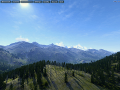
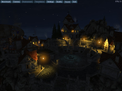
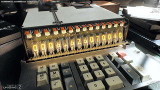

Unigine
Dieser Artikel wurde für die folgenden Ubuntu-Versionen getestet:
Ubuntu 16.04 Xenial Xerus
Ubuntu 14.04 Trusty Tahr
Zum Verständnis dieses Artikels sind folgende Seiten hilfreich:
 Benchmarks testen entweder ein Gesamtsystem oder einzelne Komponenten auf ihr Leistungspotential. Die Benchmarks des Herstellers Unigine Corp.
Benchmarks testen entweder ein Gesamtsystem oder einzelne Komponenten auf ihr Leistungspotential. Die Benchmarks des Herstellers Unigine Corp.  , der u.a. Spiele wie Oil Rush veröffentlicht hat, sind auf Grafikkarten spezialisiert. Somit erfährt man, ob der Computer den Anforderungen für aktuelle Spieletitel gerecht wird.
, der u.a. Spiele wie Oil Rush veröffentlicht hat, sind auf Grafikkarten spezialisiert. Somit erfährt man, ob der Computer den Anforderungen für aktuelle Spieletitel gerecht wird.
Die auf der Grafik-Engine Unigine basierenden Test-Programme erlauben die Nutzung für den Privatgebrauch kostenloser Benchmarks. Je nach vorhandener Hardware kann ein anderer Test verwendet werden.
| Unigine Benchmarks | ||
| Test | Grafikkarte (mind.) | Zusatzinformationen |
Valley Benchmark  | ATI Radeon HD 4xxx / NVIDIA GeForce 8xxx / Intel HD 3000 | Grafikkarte mit mind. 512MB RAM / 1,5GB Festplattenspeicher |
| Heaven Benchmark | ATI Radeon HD 4xxx / NVIDIA GeForce 8xxx / Intel HD 3000 | Grafikkarte mit mind. 512MB RAM / 1GB Festplattenspeicher |
| Superposition Benchmark | AMD Radeon HD 7xxx / Intel HD 5xxx | Grafikkarte mit mind. 2GB RAM / 7GB Festplattenspeicher |
Man sollte wissen, dass aktuellere Tests mehr Informationen wie z.B. Temperaturen anzeigen als ältere Benchmarks. Eine kostenpflichtige Pro-Version, welche Zusatzmöglichkeiten bietet, kann über die Internetseite erworben werden.
|  |  |  |
| Valley Benchmark | Heaven Benchmark | Superposition Benchmark |
Installation¶
Die Installation beschränkt sich darauf, auf der Herstellerseite den gewünschten Test herunterzuladen, zu entpacken [1] und die passenden Dateirechte zum Ausführen [2] für die enthaltenen Startskripte zu setzen.
Bedienung¶
Vor der Verwendung der Software sollte das System auf den aktuellen Stand gebracht und aktuelle Grafikkartentreiber installiert werden. Zusätzlich Prozesse und Anwendungen sollten beendet werden, um das Ergebnis nicht zu verfälschen.
Nun wechselt man in den beim Entpacken entstandenen Ordner (z.B. sanctuary) und ruft den jeweiligen Test in einem Terminalfenster auf [3]. Ein Beispiel:
./1920x1080_fullscreen.sh
Nach dem Start können die für den Test notwendigen Einstellungen (Sprache, Qualität, Mehrmonitorbetrieb, Auflösung...) festgelegt werden. Über "RUN" wird das Benchmarking eingeleitet. Im Fenster werden aktuelle Informationen (Temperatur, FPS, ...) angezeigt. Nach Beendigung des Testlaufs können die Ergebnisse exportiert werden.
Tastenkürzel¶
| Tastenkürzel | |
| Taste(n) | Funktion |
| Esc | Menü |
| F2 | Drahtmodell |
| F3 | Mosaik |
| F4 | Kameramodus |
| F9 | Benchmark starten |
| F12 | Bildschirmfoto aufnehmen |
| ⏎ | Nächste Szene |
| Pause | |
- Erstellt mit Inyoka
-
 2004 – 2017 ubuntuusers.de • Einige Rechte vorbehalten
2004 – 2017 ubuntuusers.de • Einige Rechte vorbehalten
Lizenz • Kontakt • Datenschutz • Impressum • Serverstatus -
Serverhousing gespendet von